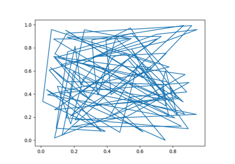

mytoolbox.module1.my_plot#
- my_plot(x, y)[source]#
Short summary.
- Parameters:
- Returns:
Description of returned object.
- Return type:
Examples
Examples should be written in doctest format, and should illustrate how to use the function/class. >>>
Examples using mytoolbox.module1.my_plot#

Example 1